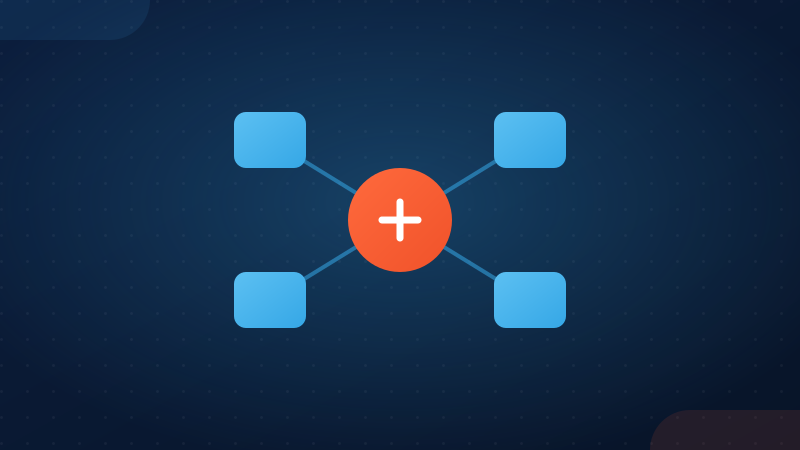
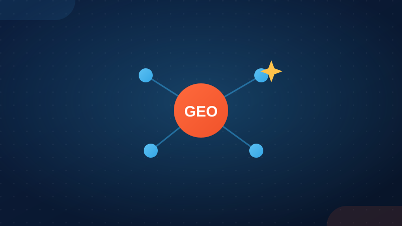

279|279|279|
280|280|280|
293|293|293|·Read next
The method explained
281|281|281|
282|282|282|  286|286|286| StrategyBecome a reference, not just visibleVisible attracts visitors. A reference attracts trust, and customers.Read the article →
287|287|287|
288|288|288|
286|286|286| StrategyBecome a reference, not just visibleVisible attracts visitors. A reference attracts trust, and customers.Read the article →
287|287|287|
288|288|288|
291|291|291|
292|292|292| 
283|283|283| StrategyClick First™ isn't just another SEO serviceThe problem isn't the tools, it's their isolation. Click First connects them.Read the article → 284|284|284| 285|285|285|
286|286|286| StrategyBecome a reference, not just visibleVisible attracts visitors. A reference attracts trust, and customers.Read the article →
287|287|287|
288|288|288| 
289|289|289| AI visibilityGEO: optimize your business for generative AIThe natural evolution of SEO: being understood and cited by generative AI.Read the article → 290|290|290|